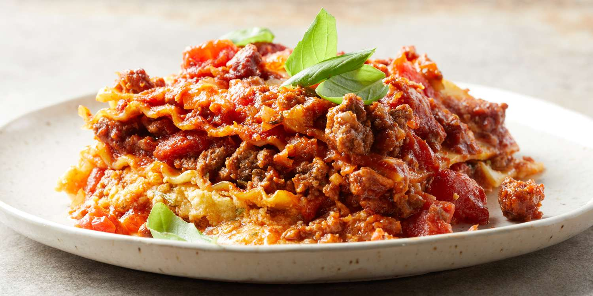
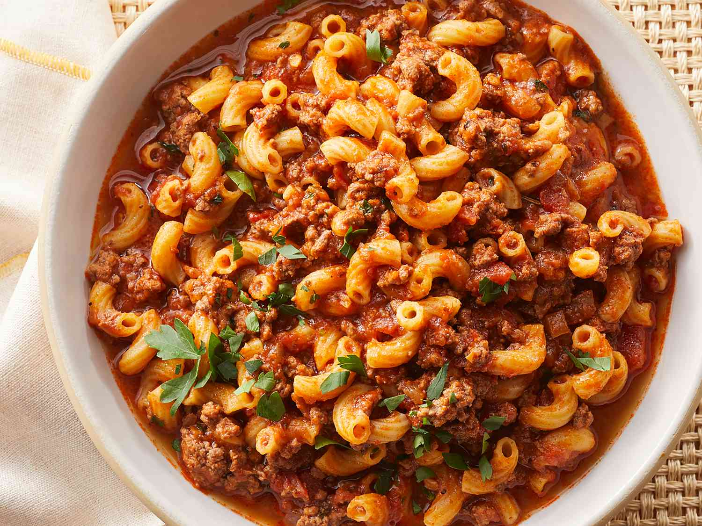

My Favorite American Recipes
-
American Lasagna

Ingredients:
- 1 ½ pounds lean ground beef
- 1 onion, chopped
- 2 cloves garlic, minced
- 1 (29 ounce) can diced tomatoes
- 2 (6 ounce) cans tomato paste
- 2 tablespoons brown sugar
- 1 tablespoon chopped fresh basil
- 2 ½ teaspoons salt, divided
- 1 teaspoon dried oregano
- 12 dry lasagna noodles
- 1 pint part-skim ricotta cheese
- ½ cup grated Parmesan cheese
- 2 large eggs, beaten
- 2 tablespoons dried parsley
- 1 pound mozzarella cheese, shredded
- 2 tablespoons grated Parmesan cheese
Steps
-
Chef John's American Goulash

Ingredients:
- 1 tablespoon olive oil
- 2 pounds ground beef
- 1 large onion, diced
- 4 cloves garlic, minced
- 2 large bay leaves
- 2 tablespoons Hungarian paprika
- 2 teaspoons Italian seasoning
- 2 teaspoons kosher salt
- ½ teaspoon ground black pepper
- 1 pinch cayenne pepper, or to taste
- 1 quart chicken broth or water
- 1 (24 ounce) jar marinara sauce
- 1 (15 ounce) can diced tomatoes
- 1 cup water
- 2 tablespoons soy sauce
- 2 cups elbow macaroni
- ¼ cup chopped Italian parsley
- 1 cup shredded white Cheddar cheese
Steps